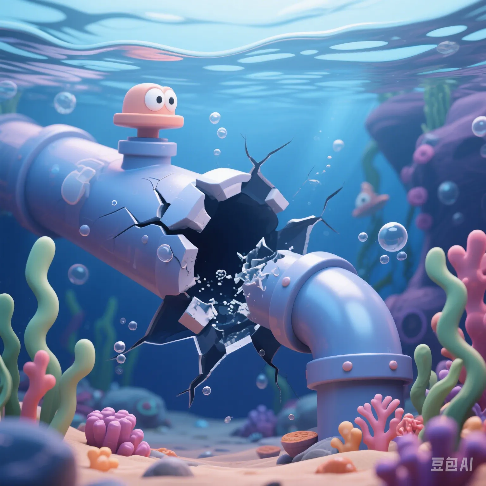

Russian Military's Pipeline Surprise Attack Shocks the World: Is a New Era of Underground Warfare Here?
PeaceLove.Top Insights :2025-04-17
Underground explosion, gas supply cut off overnight, affecting hundreds of millions of people. At the beginning of 2025, an apparently ordinary explosion shook the whole of Europe: The natural - gas pipeline from Poland to Germany suddenly burst, and the detection signals indicated human - made sabotage. Subsequently, the exposed intelligence shocked the world - it was a targeted explosion launched by the 'Special Operations Infiltration Squad' of the Russian military, with the target being the 'Western energy - supply channels to Ukraine'. This move marked the official start of an invisible underground war.
'Weaponizing infrastructure': The new normal of warfare
In the past, wars were fought against armies, but now they are fought against invisible pipelines, cables, and servers:
- The mystery of the 'Nord Stream pipeline explosion' in 2022 remains unsolved, setting a precedent.
- Submarine optical cables, natural - gas transmission networks, and hydropower - station systems have all become potential targets for attacks.
- A single precise explosion could paralyze a country's energy and network operations for weeks.
Why have pipelines become the focus of the war? 🔍
- High dependence: 40% of Europe's energy still relies on cross - border natural - gas transportation.
- Easy to damage, difficult to defend: Thousands of kilometers of underground facilities have weak protection, and satellites and drones can't monitor them in real - time.
- Extremely high tactical benefits: Without bloodshed, it can cause huge economic chaos and public panic.
The 'invisible confrontation' on the Ukrainian battlefield ⚔️
As the Russia - Ukraine conflict has continued, both sides have shifted from the frontal battlefield to attacks on logistics and infrastructure:
- The Russian special - operations forces are specialized in 'harassing hydropower stations' and 'breaking radar links'.
- The Ukrainian side uses Western drones to counter - attack power grids and oil depots in Russian territory.
- Both sides have tacitly agreed that 'civil - systems are also battlefields'.
The Western response: Is encryption + backup not enough? 🛡️
Facing the increasing frequency of 'underground tactics', the EU and NATO countries are urgently strengthening their defenses:
- Upgrading digital monitoring: Deploying AI inspection systems to monitor energy networks in real - time.
- Physical isolation and double - backup: Strengthening the'redundancy ability to break the chain' of strategic facilities.
- Confidentializing submarine pipeline network maps: Gradually decoupling intelligence in sensitive areas from civilian navigation.
However, a former CIA analyst said bluntly, 'As long as you still use electricity, the Internet, and rely on imported energy - you can't avoid this kind of tactics.'
Implications and warnings for China ⚠️
Although geographically far from the war, China cannot ignore the security issues it faces:
- Super - long infrastructure projects such as the 'West - to - East Gas Pipeline' and the 'South - to - North Water Diversion' are also vulnerable to attacks.
- Data centers and submarine - cable outlets will become future strategic weaknesses.
- In the AI + IoT environment, a single 'precise interference' could cause a nationwide power outage or logistics paralysis.
Conclusion: Future wars don't just start on the ground
Maybe the next war doesn't start when the shells start to explode - but when the water in your tap runs out, the elevator gets stuck, or the Internet goes down...